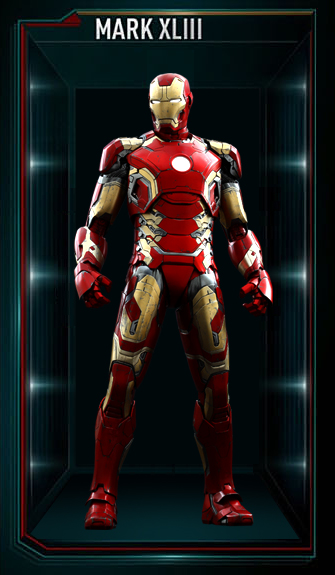
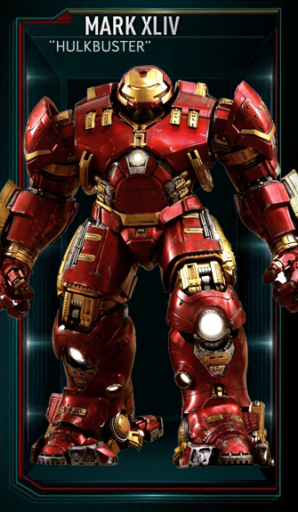
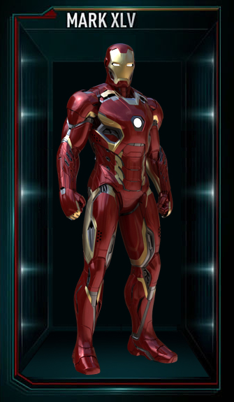
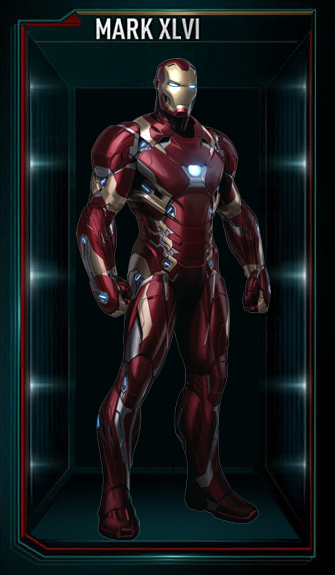
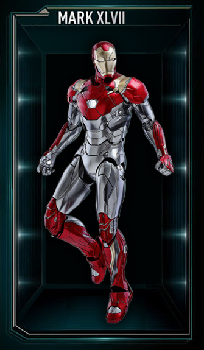
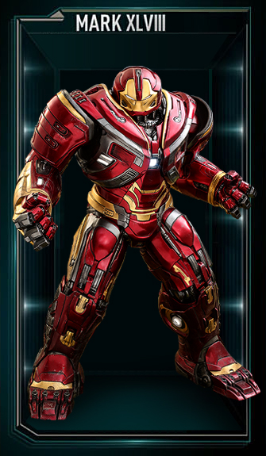
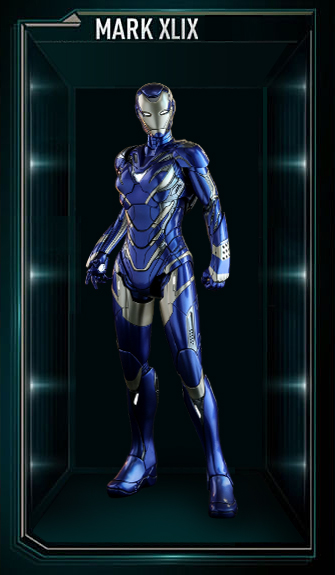
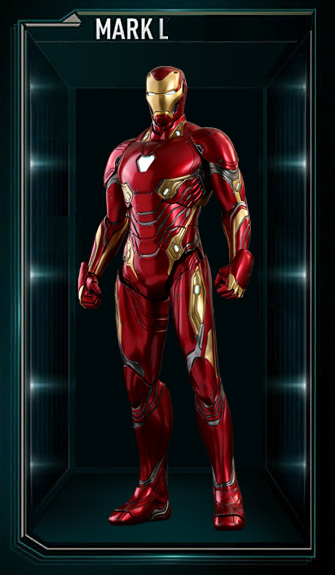
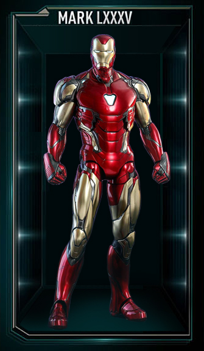

안녕하세요? 저의 미술관을 찾아주신 여러분들 모두 감사드립니다.
어릴 적 꿈이 화가여서 한 번쯤은 개인 전시회를 열어보고 싶었는데,
드디어 이루게 되었네요~ 하하^^
아래에 있는 작품들은 모두 제가 정성을 다해 직접 만든 작품들입니다.
다양한 방법으로 즐겁게 감상해주시길 바랍니다.
작품 감상이 끝나면, 추천드리는 클래식을 들어보세요!
● 미술관 안내
＃운영 시간: 00:00 ~ 24:00 입장 가능 / 연중 무휴
# 작품과 함께 감상하기 좋은 음악을 미술관 전체에 흘러나오게 하였습니다.
(상단의 탭에서 음악을 끄고 켤 수 있습니다.)
JY's ArtWeb
여러분은 여기 시계가 보이시나요? 디지털 시계 말고요!
시야가 넓은 사람만 이 영롱한 시계가 보입니다..
(컴퓨터나 노트북에서 감상해보실 수 있습니다.)
아마 벤자민 버튼의 시간도 여기선 제대로 가겠죠~
다음 수강 신청 때는 이걸로 올클 한번..??
(망하면 책임은 안 집니다)
제 아트웹 뒤편에 살고있는 여우, '초키'입니다.
웹 사이트의 뒤편은 굉장히 춥다는 거 알고 계셨나요?
하지만 여러분의 따뜻한 손길이 닿는다면 초키도 더이상 춥지 않을테죠..
(초키에게 손을 갖다 대면 온기를 전해줄 수 있습니다.)
Mark XLIII

Mark XLIV

Mark XLV

Mark XLVI

Mark XLVII

Mark XLVIII

Mark XLIX

Mark L

Mark LXXXV

이 작품은 미술관 내 작품들 중 제작에 가장 공을 들였습니다!
성은이형의 아이언맨 리뷰 사이트를 보다가, 이걸 다른 시각으로 표현해보고 싶다는 생각이 들었습니다.
"오늘은 어떤 슈트를 입고 나가볼까?"
마치 내가 아이언맨인 것처럼 전시해봤죠.
아, 오마주에 대해서는 성은이형한테 허락받았습니다.
그저 킹갓 성은이형.. 형도 좋아하더라고요^^
Beethoven piano sonata no.14
- "Moonlight"
'월광'은 제가 좋아하는 클래식인데요.
임동혁 피아니스트의 월광은 놀랍도록 섬세합니다.
여러분들도 꼭 한번 들어보세요!